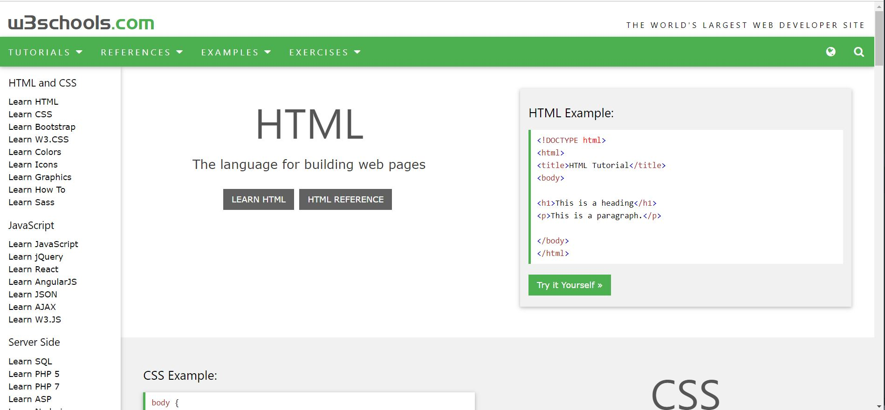
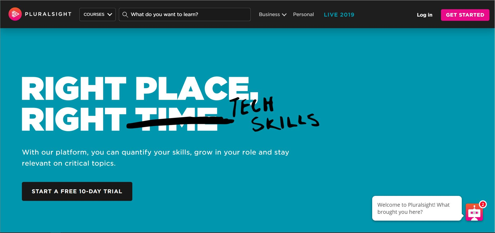
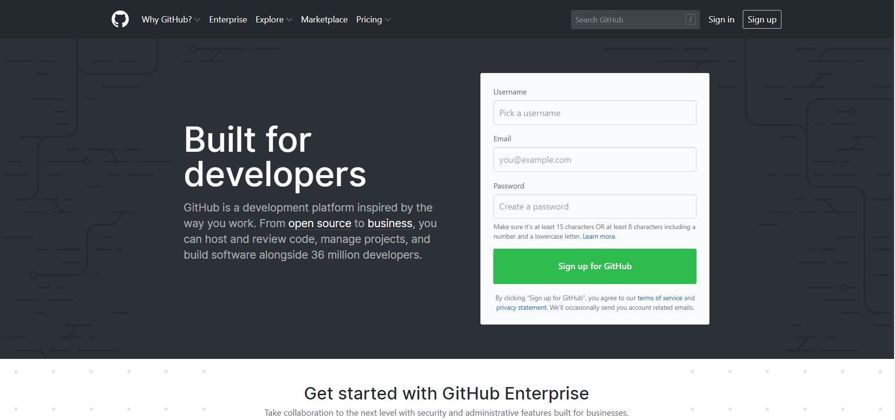
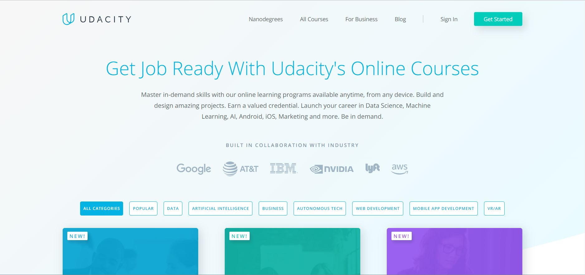
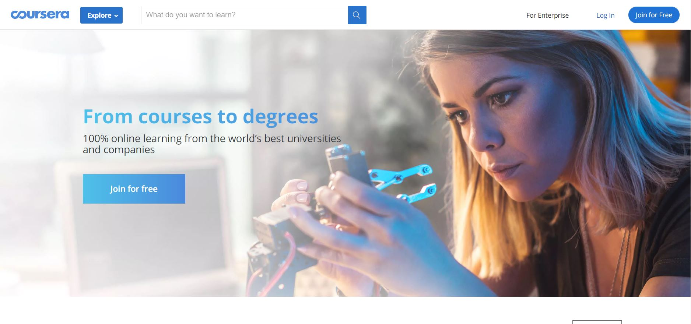

Ognjan Janev
Electrical Engineer / Software Developer
Munich, Germany
ognjan_janev@icloud.com
+49-178-5450370
Skills
Automotive Industry
Matlab / Simulink
Scrum
IDM Doors
GitHub
Java Script
Html
CSS
Python
Machine Learning - Tensorflow
Machine Learning - Keras
Swift - Apple
C++
Languages
Macedonian - mother tongue
English
German
Serbian
Chroatian
Bulgarian
Spanish
Certificates
Engineer Degree
Certified HTML Developer
Certified CSS Developer
Certified LeSS Practitioner
Motivation
I have high interest in many technology fields such as machine learning, deep learning, AI, robotics, web development, cloud computing, cyber security, coding and all things related to software development. Until now I have gathered extensive experience in projects in different areas of the automotive industry. These projects include:
- The area of quality assurance of navigation systems
- Modelbased development of ECU software in Matlab/Simulink
- Implementation of a Deep Learning Keras LTSM Neural Network as an AI estimatior
- Coding atomated big data analysing tool for test- and traindata generation
-
Learning HTML and CSS.

In future JavaScript, Python and Raspberry Pi. -
Learning Python, CSS, Keras and Tensorflow

In future JavaScript, Machine Learning, Big Data, Data Science and Cyber Security. -
Learning Spanish.
In future also other languages.
-
Learning about Git and GitHub and how to use them.

In future colaborating on open Source Projects. -
In future learning about Big Data and Machine Learning.
 -
In future learning about AI, Machine Learning and Coding.

My preferred job would be working in a customer-oriented company as a part of a well coordinated team with a strong team spirit. The job would offer opportunity to work on innovative products and/or services that increase customer satisfaction. Ideally while one can both deepen the existing knowledge but also constantly learn new technologies.
Work Experience
Software developer - vehicle driving dynamics / BMW AG
Jun 2015 - Current
Currently I am working as a software developer at BMW. As we are using the scrum Framework, I am part of the development team. My colleges and I develope software for sensor signal evaluation (velocity, yaw rate, acceleration) and estimation algorithms (side-slip angle, vehicle weight). At the moment I am involved more and more in developing neuronal networks. Especially with the focus of further optimizing the estimation algorithms adding AI estimators. For this purpose I use the Tensorflow and Keras libraries while using Python code for the training of the networks.
At the same time I develope software for big data analysis using Matlab. The software is used for automated generation of training and testdata for the neuronal networks, a sort of preprocessing.
We are using GitGub Enterprise for the versioning of the software changes. The proprietary issue tracking and agile project management is done with Jira.
I participate in vehicle trials which are done in Germany, France, Sweden, and Italy. These help us evaluate the software as an integral part of the whole vehicle.
Software developer - energy distribution / Esprit Engineering GmbH
May 2012 - May 2015
During the above listed period I worked as a software developer in the automotive industry. I developed energy grid stability software and steering assistance software for the automotive ECUs (Electronic Control Units). The development was done model-based using Matlab/Simulink. We did the versioning of the software changes in TortoiseSVN (Subversion).
I did the test case definition and preliminary testing (SW test) with TPT (Piketec). Afterwards I did the in depth software analysis and measurement evaluation of the integrated SW on the ESU (HW test) with Vector Canape. As a last stage of verifying the software as an integrated part of the car I participated in vehicle trials (in France). The software problem Management for bug fixing was done with HP ALM.
While developing I wrote the requirements documentation in IBM Doors. At that time the working was done under the classical waterfall model.
Test engineer - navigation systems / Bertrandt AG
Jul 2010 – Apr 2012
My first job after my studies at the KIT was as a test engineer in the field of navigation and traffic information systems. I was assigned with testing and quality assurance of navigation maps and navigation software. I carried out automated and semi-automated tests. I also participated in the development, implementation and use of a test tool as part of a test automation project.
Another side project that I worked on was the adaptation of the map data interface of an open source navigation system and the generation of OEM navigation system-like user interface.
Research assistant - GPS receiver / Karlsruhe Institute of Technology (KIT)
Apr 2010 – Jul 2010
After I finished my diploma theses I continued working on the GPS receiver project at the Institute for Theoretical Electronics and System Optimization at KIT. This was a part of a doctor theses of a college of mine.
I debugged the program code of the GPS receiver in C++ and researched the stability of the carrier loop of navigation channels. I also preformed offline data evaluation with Matlab. Lastly I wrote a user manual of the real-time operating system RTAI Linux for GPS / INS integration.
Intern - CD/DVD testing / Expleo Group
Nov 2008 – Apr 2009
During my studies I did a 6 month internship at a small company in Ingolstadt, Germany called Berner & Mattner, now a part of the Expleo Group.
My tasks included test case modeling for automated testing of CD and DVD changers in Audi vehicles. I carried out automated tests on a HiL (Hardware in the loop testing platform) and also did troubleshooting for the tests.
Student assistant - mineral oil research / Karlsruhe Institute of Technology (KIT)
Dec 2006 – Oct 2007
While studying to become an electrical engineer in Karlsruhe, Germany I worked part-time as a student assistant at the Institute of Electrical Energy Systems and High Voltage Technology. I researched the difference between mineral oil and regenerative and biodegradable vegetable oils as insulation and cooling medium for power transformers.
I determined the various electrical and dielectric properties of various oils and documented the test results. The description of the measuring methods in the institute's own Wikipedia site, was also part of my job there.
Education
Karlsruhe Institute of Technology (KIT)
Oct 2003–Jan 2010
Diploma degree - Electrical engineering and information technology (equivalent to a masters degree)
- Prediploma studies (Minors) - Basic subjects
- Higher mathematics
- Experimental physics
- Digital technology
- Computer Science
- Linear electrical networks
- Electrical circuits
- Main Diploma studies (Minors) - Extended subjects
- Measuring technology
- System dynamics and control engineering
- Messaging
- Systems and Software Engineering
- Generation, transmission and distribution of electrical energy
- Main Diploma studies (Majors) - Specialised subjects
- Methods of signal processing
- Identification and optimization of technical processes
- Knowledge-based systems in automation technology
- Internship: System optimization
- Principles of sensor fusion in integrated navigation systems
- Image evaluation principles of navigation and object tracking
- Internship: Digital Signal Processing in measurement technology
- Functional and software development in the automotive industry
- Digital signal processing
- Business Management for engineers
- Study thesis - Research of the Sigma-Point-Kalman Filter for SAR / INS Integration
- Coding in Ada
- Offline data processing and process comparison using Matlab
- Documentation
- Diploma thesis - Optimization of the GPS satellite channel management of an integrated navigation system
- Coding in C ++
- Analysis of Tightly-coupled and Deeply-coupled INS / GPS Architecture
- Offline data evaluation with Matlab
- Simulation (GPS signal generator)
- Documentation